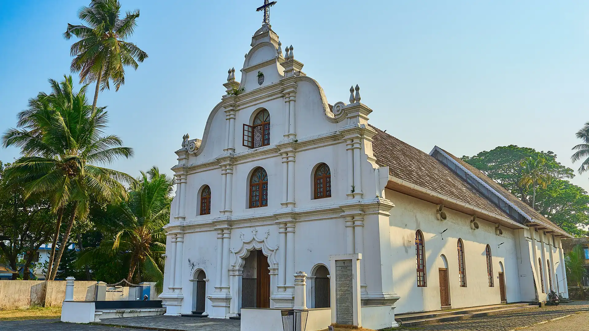
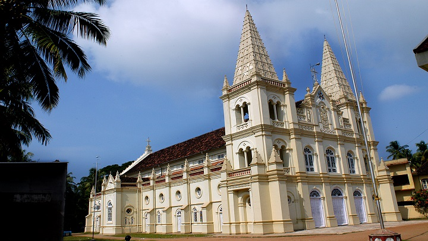
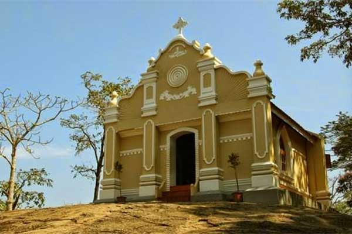

Timing: 9:00 AM to 6:00 PM
Entry Fee:Free
History: Built in 1503 by the Portuguese; Vasco da Gama was buried here.
Place: Fort Kochi, Kerala
Nearby Restaurants:

Timing: 8:30 AM to 7:00 PM
Entry Fee: Free
History:One of the oldest basilicas in India, built by the Portuguese.
Place: Fort Kochi, Kerala
Nearby Restaurants:

Timing: 5:00 AM to 6:00 PM
Entry Fee: 100 (Wildlife Sanctuary)
History: Major Christian pilgrimage center dedicated to St.Thomas.
Place: Ernakulam District, Kerala
Nearby Restaurants: